Overview
This mod patches Baldur's Gate II: Throne of Bhaal to support additional creature and character animations (referred to as 'animation slots'). It also offers a dynamic automated process for claiming new animation slots. Thus, it acts as a central hub, usable by anyone who would like to add animation entries to the game without being bogged down by issues of mod conflicts and incompatibilities.
Infinity Animations supports a wide variety of animation types from Baldur's Gate I, Baldur's Gate II, Icewind Dale I, Icewind Dale II, Planescape: Torment and Neverwinter Nights. As an added bonus, the mod restores Baldur's Gate I character animations in their entirety, and paperdolls have been unlocked for some animations that did not support them previously.
An important feature for players who use several large mods (known as 'megamods') is a resolution of animation conflicts, and a restoration of standard animations that megamods have overwritten.
Finally, this mod contains optional components that implement many new animations into the game. Ongoing work will address sound sets for new animations. While the number of supported animations may not be 'infinite' as the name suggests, it should be large enough to accommodate everyone's present (and in all likelihood future) needs.
Key features
- Restores Baldur's Gate I character animations
- Improves paperdoll support for existing animations
- Adds custom game animations for characters and creatures (including dragons)
- Allows use of many different animation types (some never before seen in the games)
- Resolves the problems of animation stacking, slot and naming conflicts
- Offers GUI support for adding new animations
- Lets you watch as the percentage of free animation entries refuses to go down 🙂
For details on how to add new animations, consult the Adding an Animation Entry section of the IA Reference Picker documentation.
•BACK TO TOP
Compatibility
Infinity Animations works with BG2: Throne of Bhaal and conversions based on ToB. Make sure you have Throne of Bhaal patched to version 26498. Check the ReadMe files related to your patch in your game folder and the BioWare website if necessary.
This mod should also work with all other mods, including Baldur's Gate Tutu (and EasyTutu), Baldur's Gate Trilogy and the BiG World Project.
Install this mod after most other mods, particularly those that add creatures or animations, but before any final "biffing" routines.
Start a new game after installing this mod, or use the Saved Game Animation Fixer component if you're reluctant to do that.
•BACK TO TOP
Installation
Notes
If you've previously installed the mod, remove it before extracting the new version. To do this, run setup-infinityanimations.exe, uninstall all previously installed components and delete the infinityanimations folder.
When installing or uninstalling, do not close the DOS window by clicking on the X button! Instead, press the Enter key whenever instructed to do so.
Disable any antivirus or other memory-resident software before installing this or any other mod. Some (particularly avast!) have a tendency to report false positives with mod activity, resulting in failed installs.
You can extract files from the archive using WinRAR, ZipGenius or another file compression utility that handles .rar files.
Important: Download all content you may require from the Infinity Animations download category at Spellhold Studios. If in doubt, download them all (most megamod installs will need all archives). Extract all archives using the "Do not extract paths" option on the Advanced tab in WinRAR. Also, make sure the "Destination path" on the General tab terminates in /content or /restore after infinityanimations (there should be no subfolders beyond that).
Extract all archives to the /content folder except IA_BG2_Restores.rar, which should go in the /restore folder. If you extract IA_Wh_Dr_Wyv_LoP.rar (currently only needed for the Planar Sphere mod), you can delete the subarchive The_Lady's_Shadow.rar after extraction, as it is currently unused due to animation size limitations.
For WinZip, make sure the "Use folder names" box is unselected.
You should end up with a bunch of .bam files and no subfolders in your "content" and/or "restore" folders. The installer will warn you if you're missing anything you need, at which point you can exit it, download missing content, extract it and rerun the installer.
Windows
Extract the contents of the mod to the folder of the game you wish to modify (BG2, BGT or EasyTutu). On successful extraction, there should be an infinityanimations folder and a setup-infinityanimations.exe file in your game folder. To install, simply double-click setup-infinityanimations.exe and follow the instructions on screen.
Run setup-infinityanimations.exe in your game folder to reinstall, uninstall or otherwise change components.
Linux
Extract the contents of the mod to the folder of the game you wish to modify.
Download the latest Linux version of WeiDU and copy WeiDU and WeInstall to /usr/bin. Then open a terminal and cd to your game installation directory.
Optional: run 'tolower' and answer 'Y' to both queries. You can avoid running the second option (linux.ini) if you've already ran it once in the same directory. To save time, the archive is already tolowered, so there's no need to run the first option (lowercasing file names) either, if you've extracted only this mod since the last time you lowercased file names. If unsure, running tolower and choosing both options is the safe bet.
Run WeInstall setup-infinityanimations in your game folder to install the mod. Then run wine BGMain.exe and start playing.
Note for Complete Uninstallation
In addition to the methods above for removing individual components, you can completely uninstall the mod using setup-infinityanimations --uninstall at the command line to remove all components without wading through prompts.
⚠️ Warning: new installation process
As of version 6.0.0, options needed for installation are read from infinityanimations-config-default.ini file, or infinityanimations-config.ini if it exists.
The previous versions needed all required content to be downloaded from the Infinity Animations download category at Spellhold Studios and extracted into the infinityanimations content or restore subfolders. The installer warned you if you were missing anything you need, at which point you could exit it, download missing content, extract it and rerun the installer.
From now on, the content needed by Infinity Animations is included in the archives folder and automatically copied by the main component into your override folder. Being useless, the respective content and restore subfolders have been removed.
By default, the whole archives folder content will be installed. If you want to define your own customized installation, you have to edit infinityanimations-config-default.ini (found in infinityanimations folder) with Notepad or another text editor, then save it as infinityanimations-config.ini.
Each line consists of a configuration option, then '=', then a number. The only thing you should edit is the number. For example, if you don't want to use svirneblins animations, change the ia_iwd_svirfneblin value to 0.
The installation process will read both ini files and prioritize user's options values. If a value is not set or mismatched in infinityanimations-config.ini, any installation failure will be prevented by reverting it back to its default value.
If you want to install a component requiring files that you decided not to install, the installer will install them automaticaly if there are still in the archives folder. Otherwise, it will warn you. You will have to exit it, extract them in your mod folder, and rerun the installer.
Following the above example, if you indeed wish the svirneblins get the svirneblins animations after having set ia_iwd_svirfneblin option to 0, the installer will force their installation if it finds them in archives folder. If not, it will warn you to extract them before installing the component.
Here is a chart listing the options related to the installation process:
| Variable |
Description |
| ia_bg2_restores |
IA Content - BG2 Restores
- Content: Goblin elite with axe (MGO3), Goblin elite with bow (MGO4), Lich (MLIC), Lich black (MLER), Marilith (MTAN), Myconid blue (MMY2), Orc elite melee (MOR3), Orog (MNO1), Orog elite (MNO2), Static spider woman (MSPL). Includes relevant creature sound tables.
- This is the content module for BG2 restored slots. It is only necessary for a megamod install which has overwritten these slots, which are: BP, BoneHill, CtB, Drizzt Saga, NEJ2, RoT, SOS, TDD, TS, TS-BP, Sheena, Planar Sphere and RPG KitsPack mods.
Installation forced only if needed [default] |
ia_ee_restore
(supports: only EE) |
IA Content - Base EE Content
- Content: all missing animations that already have animation slots in Enhanced games, restored BG I character animations. Includes all relevant missing creature sounds and ini files.
- Needed for all EE games (BGEE, SoD, BG2EE, EET).
- Needed for all components.
1 = Install [default] |
| ia_base_anims |
IA Content 001 - Base Content
- Content: Basilisk and Tasloi animations, the missing IWD animations that already have animation slots in BGII (Beetle bombardier, Beetle boring, Beetle fire, Beetle rhinoceros, Cyclops, Ghast greater, Ghost, Ghoul greater, Histachii, Lich white, Lizard man, Lizard King, Shadow small, Shadow large, Troll ice, Troll snow, Umber hulk elder, Wight gray, Wight green, Wight yellow, Zombie blue, Zombie yellow), restored BG I character animations. Includes all relevant creature sounds and tables and BG1 scimitars.
- Needed for Distinctive Undead [400], More Base Animations [500], BG1 Character Animations for NPCs [8000-8010-8020-8030] and for Exported PCs [9500-9510-9520] components.
- Needed for BP, CtB, Drizzt Saga, NEJ, RoT, SOS, TDD, TS and RPG Kitspack mods.
0 = Don't install
1 = Install [default] |
| ia_belhifet_and_marilith |
IA Content - IWD Belhifet and Marilith
- Content: animation and audio files for the IWD Belhifet and IWD Marilith. Includes properly-slotted creature sounds and tables.
- Needed for Drizzt Saga, RoT, TDD, TS and TS-BP mods.
0 = Don't install
1 = Install [default] |
| ia_bg2_iwd2 |
IA Content 002 - IWDII and unused BGII Animations
- Content: all IWD II animations that are neither in BGII (Death Tyrant, Alternate Ellesime, Alternate Fire Giant, Lagoon Creature) or IWD (Abishai White, Arctic Boar, Bugbear, Bugbear Captain, Chimera, Dark Treant, Drider male/female, Elemental Water Small, Feyr lesser/greater, Fomorian Giant, IWD II goblins, Goblin Worgrider, Goblin Worgrider Captain, Half-dragon black/red, Hook Horror, Isair, Kegs, Lemure, Madae, Malarite, Orog Shaman, Shenrical, Undead Orcs, Werebadger, Wererat, Worg, Yuan-Ti Halfbreed). Includes all relevant creature sounds and tables.
- Needed for Cambion get Isair Animation [210-230], Alu-Fiends get Madae Animation [260-280] and More Icewind Dale II Animations [600] components.
- Needed for BP, CtB, NEJ, Planar Sphere, RoT and Sheena mods.
0 = Don't install
1 = Install [default] |
ia_ee_tob
(supports: only ToB) |
IA Content - EE games new Animations ported to ToB
- Content: Boar Wild, Bugbear Shaman, Crusader Soldier, Dog Gray, Dragon Green IWD, Dragon Green Juvenile, Dragon Red Juvenile, Dragon Green Young, Dragon Silver Young, Dragon White Young, Drowned Dead Red, Ettin Ghost, Fiend Red, Giant Hill, Gibberling Brood, Goblins Mkhiin (common, with bow, with staff, with armor and axe, with armor and bow), Goblin Worg Elite, Goblin Worg Shaman, Golem Mini, Halfdragon Green, Hephernaan, Megalocentipede, Black Pudding, Red Wizard, Sailor Dark, Sailor Green, Sailor Red, Snake Water, Spider Water, Troll Scrag, Troll Spectral, Tunnel Worm, Wyrmling Albino, Wyvern White. Includes all relevant creature sounds and tables.
0 = Don't install
1 = Install [default] |
| ia_fiends_genies |
IA Content - Fiends and Genies
- Content: Fiend green (Nabassu), Fiend blue, Marilith Dark, Maurezhi, Myrlochar, Dao, Dao with legs, Efreeti, Efreeti with legs, Janni, Janni with legs, Marid, Marid with legs, Ghoul queen, Hag Annis, Night Hag, Green Hag, Sea Hag, Yochlol. Includes Erinyes, Gelugon and Tieflings sound files.
- Needed for Distinctive Genies [50] and Distinctive Fiends [100] components.
0 = Don't install
1 = Install [default] |
| ia_iwd |
IA Content - Remaining IWD Animations
- Content: Remaining IWD animations not in the other archives (Animated Plate bronze/dark/green, Arundel, Barbarian Shaman hammer/staff/club, Barbarian Warrior tan/red/brown, Barbarian Icasaracht, Belhifet Priest, Creeping Doom, Drowned Dead, Elemental Earth/Water/Fire, Fire Giant IWD, Iron Golem IWD, Remorhaz, Sahuagin small/large, Seer, Tundra Yeti, Umber Hulk Vodyanoi, Verbeeg, Wight Barrow). Includes all relevant creature sounds and tables.
- Needed for Distinctive Fiends [100], Distinctive Undead [400], Skeleton Warriors [410-415-420], Seer Animation [450-455-460] and More Icewind Dale Animations [550] components.
- Needed for BP, BH, CtB, NEJ, RoT, SOS and TS mods.
0 = Don't install
1 = Install [default] |
| ia_iwd_svirfneblin |
IA Content - IWD Svirfneblin
- Content: IWD/IWD2 animations for svirfneblin (deep gnomes). By default, they are pale (flesh-coloured) whereas in canon references, they should be darker (stone-coloured). The original game had variants with and without pickaxes (they do not display separate weapon animations). Since these slots are unpaletted, there are alternates as follows (the last two being custom variants of the IWD pale animations): Svirfneblin pale with axe, Svirfneblin pale without axe, Svirfneblin dark with axe, Svirfneblin dark without axe. Includes gnome sounds ported from NWN.
- Needed for Svirfneblin Animations [480-490] component.
0 = Don't install
1 = Install [default] |
| ia_moinesse_edits_iaised |
IA Content - Moinesse's Avatar Edits (IA compatible version)
- Content: Female Elf Mage, Female Human Druid, Female Human Fighter, Female Human Mage, Female Human Thief, Male Human Barbarian, Male Human Ninja, Male Vampire.
- Needed for Moinesse's Avatars for IA [7000-7010-7020-7030] component.
0 = Don't install
1 = Install [default] |
| ia_nwn_01_modron |
IA Content - WoRm's NWN Ports and Alternate Modron
- Content: Alternate Modron, WoRm's NWN ports (Amel, Basilisk, Bebilith, Hamatula, Osyluth, Pit Fiend, Scarecrow, Vedred). Includes all relevant creature sounds and tables.
- Needed for Distinctive Fiends [100], Pit Fiends {150-175] and More Neverwinter Nights Animations [650] components; and for RPG Kitspack mod.
0 = Don't install
1 = Install [default] |
| ia_nwn_misc_1 |
IA Content - Miscellaneous NWN Animations I
- Content: Bombardier Beetle, Displacer Beast, Female Fire and Frost Giants, Succubus (with object animations), Bovine Axe Thing (don't ask). Includes all relevant creature sounds and tables.
- Needed for Distinctive Fiends [100] and More Neverwinter Nights Animations [650] components; and for RPG Kitspack mod.
0 = Don't install
1 = Install [default] |
| ia_pst_abishai |
IA Content - PST Abishai
- Content: Black Abishai, Blue Abishai, Green Abishai, Red Abishai (based on PS:T animations). Includes creature sounds.
- Needed for Distinctive Fiends [100] component.
0 = Don't install
1 = Install [default] |
| ia_pst_paletted |
IA Content - PST Paletted Animations
- Content: Aasimar Female, Baurier Male, Curst Townie Female, Curst Townie Male, Dustman Female, Dustman Male, Ghoul Female, Ghoul Male, Githzerai, Godsman, Large Thug, Lower Class Townie Female, Lower Class Townie Male, Merchant, Midwife, Prostitute, Skeleton Priest, Skeleton Worker, Thokola, Thug, Tiefling Female, Tiefling Male, Townie Wizard, Upper Class Townie Female, Upper Class Townie Male, Zombie Female, Zombie Male. Includes animation sound clips.
- Needed for More Planescape: Torment Animations [710-720-760-740] component.
0 = Don't install
1 = Install [default] |
| ia_shadows_harpy_frostgiant |
IA Content - Shadows, Harpy and Frost Giant
- Content: Alternate ("murky") Shadows, Harpy and Frost Giant from IWD. Includes all relevant creature sounds and tables.
- Needed for Distinctive Undead [400] component; and for BP, Drizzt Saga, NEJv691, RoT, TDD and TS mods.
0 = Don't install
1 = Install [default] |
| ia_wh_dr_wyv_lop |
IA Content - White Wyvern and Dragon, Lady of Pain
- Content: IWD White Dragon, IWD White Wyvern large, Lady of Pain. Includes all relevant creature sounds and tables.
- Needed for Planar Sphere mod.
0 = Don't install
1 = Install [default] |
•BACK TO TOP
Components
The installer includes the following components. The number of each is the component DESIGNATED number which gives it a fixed install position, lets other components detect it and allows automated installers like the BiG World Setup specify component choices.
All subcomponents require the main component (they need to since it's the one that installs new content). All components are otherwise optional. Also note that no component affects joinable NPCs, something best left to individual modder discretion. (Hence, if something says it affects all female tieflings, it doesn't include Amber and Fade in that.)
[0] Infinity Animations (main component)
[25] Humanoid Animation Fixes
[50] Distinctive Genies
[100] Distinctive Fiends
[150-175] Pit Fiends
[210-230] Cambions get Isair Animation
[260-280] Alu-Fiends get Madae Animation
[400] Distinctive Undead
[410-415-420] Skeleton Warriors
[450-455-460] Seer Animation
[480-490] Svirneblin Animations
[500] More Base Animations
[550] More Icewind Dale Animations
[600] More Icewind Dale II Animations
[650] More Neverwinter Nights Animations
[710-720-730-740] More Planescape: Torment Animations
[7000-7010-7020-7030] Moinesse's Avatars for IA
[8000-8010-8020-8030] BG1 Character Animations for NPCs
[9000] Fix Area Creature References
[9500-9510-9520] BG1 Character Animations for PCs
[9600-9610-9620] BG1 Character Animations for Saved Games
[9900-9910] Saved Game Animation Fixer
0. Infinity Animations (main component)
Requires ToB v26498
- Checks mod files
- ToB only: Checks .exe validity, backs up and patches the .exe
- ToB only: Replaces _LOW creature animations
- Updates .ids files
- Restores any necessary mod-overwritten animations
- Copies new animations (any extracted to /content folder)
- Fixes any affected creatures
25. Humanoid Animation Fixes
- Male human fighters get the fighter instead of cleric animation
- Male elf fighters get the fighter instead of cleric animation
- Male halfling fighters get the fighter instead of cleric animation
- Female human fighters get the fighter instead of cleric animation
- Male human mages get the mage instead of cleric animation
- Male elf mages get the mage instead of cleric animation
- Male human thieves get the thief instead of fighter animation
- Female human thieves get the thief instead of fighter animation
- Male human monks get the monk instead of cleric animation
- Male human pirates get the pirate animation
- Male human sailors get the sailor animation
- Amnish guards get the Amnish guard animation
- Male human Shadow Thieves get the Shadow Thief animation
50. Distinctive Genies
Requires IA_Fiends_Genies content
- Uses djinn, efreet, dao, jann and marid animations where sensible
BACK TO COMPONENTS INDEX
100. Distinctive Fiends
Requires IA_Fiends_Genies, IA_IWD and IA_PST_Abishai content
Requires IA_NWN_01_Modron content only if certain mods are installed
- Nabassus get a green-grey tanar'ri animation
- Chromatic Demon gets a somewhat more colourful base animation
- Bebiliths (Longer Road and Drizzt Saga only) get the NWN animation
- Some mariliths get a darker animation
- Night hags get the PS:T night hag animation
- Bone fiends get the NWN osyluth animation
- Gelugons (only if added by a mod) get a frost salamander animation
- Yochlols (except those in drow form) get a dark otyugh-based animation
- White, green and red abishai get the relevant IWD or PS:T animations
- Manes get the IWD drowned dead animation
- Erinyes get a black-winged elf avatar
- Succubi get the NWN succubus animation
- Maurezhi get a dark ghoulish animation
- Glabrezu get the proper glabrezu animation
BACK TO COMPONENTS INDEX
Pit Fiends
150. All get the NWN animation
175. Some get the NWN animation
Requires IA_NWN_01_Modron content
- Choice of subcomponent (or none); "some" = roughly half, randomly selected
BACK TO COMPONENTS INDEX
Cambions get Isair Animation
210. All cambions
230. Some cambions
Requires IA_BGII_IWDII content
- Same logic as Pit Fiends component
BACK TO COMPONENTS INDEX
Alu-Fiends get Madae Animation
260. All alu-fiends
280. Some alu-fiends
Requires IA_BGII_IWDII content
- Same logic as Pit Fiends component
BACK TO COMPONENTS INDEX
400. Distinctive Undead
Requires IA_Base_Anims, IA_IWD and Shadows_harpy_frostgiant content
- Banshees get the wailing virgin animation
- Floating skulls get the demilich animation
- Greater ghasts get the IWD greater ghast animation
- Generic ghosts get the IWD ghost animation
- Greater ghouls get the IWD greater ghoul animation
- Some ghouls get the PS:T ghoul queen animation
- Greater liches get the IWD white lich animation
- Apparitions get the mist creature animation
- Revenants get the revenant animation
- Shadow Beasts get the shadow animation
- Wraiths get the IWD large shadow animation
- Spectres get the IWD large shadow murky animation
- Shadows get the IWD small shadow animation
- Some shadows get the IWD small shadow murky animation
- Greater skeletons get the skeleton monster animation (former skeleton0)
- Moon horrors get the skeleton fiend animation (former skeletonb)
- Female vampires get the vampire female animation
- Wights get the IWD grey wight animation
- Green zombies get the IWD green wight animation
- Zombie lords get the IWD yellow wight animation
- Undead knights and similar get the IWD barrow wight animation
- Greater zombies get the IWD yellow zombie animation
- Lacedons and sea zombies get the IWD blue zombie animation
BACK TO COMPONENTS INDEX
Skeleton Warriors
410. Wight Barrow animation
415. Skeleton animation
420. Skeleton Warrior animation
Requires IA_IWD content
- Assigns the chosen animation to all skeleton warriors
BACK TO COMPONENTS INDEX
Seer Animation
450. Some beggars and slaves
455. Some beggars
460. Some slaves
Requires IA_IWD content
- Same logic as Pit Fiends component
BACK TO COMPONENTS INDEX
Svirneblin Animations
480. Animations only
490. Animations and sounds
Requires IA_IWD_Svirfneblin content
Skipped if Aurora's Shoes installed (does the same thing)
- Uses all svirfneblin variants for Underdark deep gnomes
BACK TO COMPONENTS INDEX
500. More Base Animations
Requires IA_Base_Anims content
- Histachii get the IWD histachii animation
- Lizardman warriors get the lizardman elite animation (brown)
- Lizardman shamans get the lizardman animation (green)
- Lizardman chiefs get the lizard king animation
- Variant trolls (normal, blue, ice, snow, small) where relevant
- Greater umber hulks get the IWD elder umber hulk animation
BACK TO COMPONENTS INDEX
550. More Icewind Dale Animations
Requires IA_IWD content
- Animated Plates get small animated plate animations
- Archdruids get the IWD Arundel animation
- Variant barbarians (brown, red, tan and shamans)
- Greater elementals make use of variant BG2/IWD animations
- Some fire giants get the IWD fire giant animation
- Iron golems get the IWD iron golem animation
- Adamantite golems get the BG2 iron golem animation
- Sahuagin priestesses get the IWD sahuagin animation
- Sahuagin royal guards get the BG2 large sahuagin animation
- Sahuagin chiefs get the IWD large sahuagin animation
BACK TO COMPONENTS INDEX
600. More Icewind Dale II Animations
Requires IA_BGII_IWDII content
- Greater fire giants and firbolgs get the fire giant variant animation
- Variant goblins (worgriders, leaders, brown, green, elites)
- Hook horrors get the hook horror animation
- Shadow druids get the Malarite animation
- Ellesime clones get the white-haired Ellesime animation
- Poison mists get the lagoon creature animation
- Death tyrants get the death tyrant animation
- Wererat gets the wererat animation
- Worgs get the IWD2 worg animation
- Yuan-Ti Halfbreeds get the IWD2 yuan-ti halfbreed animation
BACK TO COMPONENTS INDEX
650. More Neverwinter Nights Animations
Requires IA_NWN_01_Modron content
- Scythe-wielders (in NTotSC) get the NWN Amel animation
- Bombardier beetle (in Big Picture) gets the NWN animation
- Greater basilisks get the NWN basilisk animation
- Modrons get the modron animation
- Displacer beasts (in AjocMod) get the NWN-CCP animation
- Some fire giants get the NWN female fire giant animation
- Some frost giants get the NWN female frost giant animation
BACK TO COMPONENTS INDEX
More Planescape: Torment Animations
710. 25% of relevant non-joinables
720. 50% of relevant non-joinables
730. 75% of relevant non-joinables
740. Most relevant non-joinables
Requires IA_PST_Paletted content
- Female human thieves get the female Curst townie animation
- Male human thieves get the male Curst townie animation
- Female monks get the female Dustman animation
- Male monks and Dustmen get the male Dustman animation
- Some ghouls get the female ghoul animation
- Some ghouls get the male ghoul animation
- Male human smiths get the Godsman animation
- Axe- and hammer-wielding bandits and mercenaries get the large thug animation
- Sword- and dagger-wielding bandits and mercenaries get the small thug animation
- Female human peasants get the female lower-class townie animation
- Male human peasants get the male lower-class townie animation
- Male human merchants get the merchant animation
- Female human merchants get the midwife animation
- Harlots get the harlot animation
- Skeleton mage gets the skeleton priest animation
- Skeletons get the skeleton worker animation
- Female tieflings get the female tiefling animation
- Male tieflings get the male tiefling animation
- Male human mages get the townie wizard animation
- Female human nobles get the female upper-class townie animation
- Male human nobles get the male upper-class townie animation
- Some zombies get the female zombie animation
- Some zombies get the male zombie animation
BACK TO COMPONENTS INDEX
Moinesse's Avatars for IA
7000. 25% of relevant non-joinables
7010. 50% of relevant non-joinables
7020. 75% of relevant non-joinables
7030. Most relevant non-joinables
Requires Moinesse_edits_IAised content
- Male human barbarians get the male barbarian animation
- Female human druids get the female druid animation
- Female human fighters get the female human fighter animation
- Female elf mages get the female elf mage animation
- Female human mages get the female human mage animation
- Female human thieves get the female human thief animation (unless they've already received the female Curst townie animation)
- Male human ninjas and assassins get the male human ninja animation (unless they've already received the male Curst townie or the Shadow thief animation)
- Male vampires get the Moinesse vampire animation
BACK TO COMPONENTS INDEX
BG1 Character Animations for NPCs
8000. 25% of relevant creatures
8010. 50% of relevant creatures
8020. 75% of relevant creatures
8030. Most relevant creatures
Requires IA_Base_Anims content
- Uses the original Baldur's Gate character animations as specified
- The last option is "most" instead of "all" because certain creatures are excluded
- These include creatures with scimitars, katanas or anything other than a shield in the offhand slot (or related proficiencies) since BG1 did not have these animations
- Use with caution in the case of joinable NPCs: it will avoid any characters with the two weapon proficiency or a second weapon equipped, but do not try to dual wield
BACK TO COMPONENTS INDEX
9000. Fix Area Creature References
Installed by default
- Corrects changed creature animations in area files for easier reference
BACK TO COMPONENTS INDEX
BG1 Character Animations for PCs
9500. Prompt for each exported PC
9510. Prompt for problematic PCs
9520. Patch all PCs without prompting
Requires IA_Base_Anims content
- Uses the original Baldur's Gate character animations as specified
- The second option patches all PCs but prompts for those with scimitars, katanas or anything other than a shield in the offhand slot
- Scimitars and katanas should work, but will appear as longswords on character avatars
- Use with caution: do not try to dual wield or the game will likely crash
BACK TO COMPONENTS INDEX
BG1 Character Animations for Saved Games
9600. Prompt for each character
9610. Prompt for problematic characters
9620. Patch all characters without prompting
Requires IA_Base_Anims content
- Same notes as above
- You get to choose whether to patch each game (and character within it, if you've selected one of the prompting options)
- Back up your saved games before uninstalling this component, as it will restore the versions present at the time of the installation
BACK TO COMPONENTS INDEX
Saved Game Animation Fixer
9900. Correct only LOW animations
9910. Correct all animations IA has changed
- The first option prevents games from crashing due to moved LOW animations
- The second option does the above and also patches any changed animations into your saved games
- You get to choose whether to patch each game
- If you've started a new game after installing this mod, then this component is not necessary (unless you're starting in the BG2 portion of BGT)
- Back up your saved games before uninstalling this component, as it will restore the versions present at the time of the installation
•BACK TO TOP
Troubleshooting
These are some general tips if you have problems getting the game working, with or without this or other mods. Many times, errors have to do with the game engine itself or the manner of installation or gameplay. The game recommends deleting all files out of the /cache, /temp and /tempsave subfolders in your game folder to see if that resolves the problem before any further troubleshooting.
Symptom: Game freezes or crashes to desktop (CTDs)
Sometimes the game displays an "assertion error" in a pop-up window when this happens, but often times it doesn't. To enable the full error message, open the file baldur.ini in your me folder with a text editor (such as Notepad). If you find you can't edit it or save changes in Windows Vista or 7, see this topic for assistance.
Under the [Program Options] section in the file, type Logging On=1 (unless it's already there). While you're there, you may also want to make sure Debug Mode=1 is there to enable the CLUA Console for debugging and testing. Save the file and exit. Now go back into the game and try to reproduce the crash. Then look in your game folder again for the Baldur.err file and open it with a text editor to analyse its contents.
Symptom: Game crashes with no Baldur.err log and shows either a black screen or a pop-up window indicating an error at offset 005ca8a8
This usually indicates an animation-related issue. Make sure you have the latest version of the mod. If you've installed other mods after it and have this issue, install the fix available here.
Symptom:
ERROR: error copying [infinityanimations/content/somefile.bam]
ERROR: [SOMEFILE.CRE] -> [override/SOMEFILE.CRE] Patching failed (COPY)
Stopping installation because of error. (with no other error message)
Less-than-informative messages like these may indicate you're installing to a hard drive with a low data transfer rate or an antivirus program is active during installation (which can also affect data transfer). Try installing to an internal drive with antivirus protection disabled during the install. If unsure, disconnect from the Internet (either unplug your network cable or disable your wireless adaptor) and turn off all memory-resident programs during the install. To get a list of these, go to Start > Run and type msconfig where it says "Open:" then click OK. When the System Configuration Utility appears, click on the Startup tab. The only really necessary programs that need to be loaded in memory at startup are those related to your graphics chip (typically ATI or NVIDIA). Uncheck everything else, reboot and try installing the mod again. There are well-documented issues with installing mods while Avast antivirus is running, so make absolutely sure all components of Avast are completely disabled.
Other issues
If you have more than one large mod installed, please refer to the Megamod FAQ for more troubleshooting tips.
If none of this resolves your issue, or you have mod-specific issues, please report the problem in the mod's forum. Include the contents of your WeiDU.log file in the post, or attach it if it's large.
•BACK TO TOP
Credits
Author: Erephine
WeiDU coding: Miloch
Support: Sam and Gwendolyne
Special Acknowledgements to:
Programs/tools used in creation:
Copyrights
•BACK TO TOP
Version History
Version 6 - Month day, 2019
- Major updates:
- Modified animations namespaces, now compatible with non-Western code pages (got rid of the the .exe patch routine forcing a code page change and rebooting if a non-Western code page was detected) 😉
- From now on, Infinity Animations is released with all available creature animations content. It is no longer necessary to download all their archive files, but you can still select the ones you want to install. For more details on how to customize your installation, please read this chapter.
- New IA Content (EE games new Animations ported to ToB): Boar Wild, Bonebat, Bugbear Shaman, Crusader Soldier, Dog Gray, Dragon Green IWD, Dragon Green Juvenile, Dragon Red Juvenile, Dragon Green Young, Dragon Silver Young, Dragon White Young, Drowned Dead Red, Ettin Ghost, Fiend Red, Giant Hill, Gibberling Brood, Goblins Mkhiin (common, with bow, with staff, with armor and axe, with armor and bow), Goblin Worg Elite, Goblin Worg Shaman, Golem Mini, Halfdragon Green, Hephernaan, Megalocentipede, Black Pudding, Red Wizard, Sailor Dark, Sailor Green, Sailor Red, Snake Water, Spider Water, Troll Scrag, Troll Spectral, Tunnel Worm, Wyrmling Albino, Wyvern White. Includes all relevant creature sounds and tables.
- Integrated IA modders' content: D2 Bear & Werebear Animations (Ulb), Packmule_wow content pack (Kwiat_W), Butcher animation from Heroes of the Storm (Ulb) and jastey's wolfhound.
- Integrated all code and BWP Fixpack fixes:
- Integrated all BWP Fixpack graphic fixes (thanks to their authors!):
- IA Shadows_Harpy_Frostgiant content: Fixed alternate murky shadows folders names and 2da files that were inverted (small = 3bt / large = 3bu), then fixed t-anisnd.tpa for consistency.
- Added missing casting animations (sp and ca bam files, with weapons variants when needed):
- IA base_anims content: Beetle bombardier, Beetle boring, Beetle fire, Beetle rhinoceros, Cyclops, Ettin, Ghast greater, Ghost, Ghoul greater, Goblin with axe, Goblin with bow, Goblin Elite with axe, Goblin Elite with bow, Golem Ice, Histachii, Minotaur, Mummy, Orc melee, Orc range, Orc elite melee, Orc elite range, Orog, Orog elite, Orog Chieftain, Salamander fire/frost, Shadow small, Shadow large, Skeleton fiend, Skeleton warrior, Troll blue, Troll ice, Troll snow, Water weird, Yuan-ti, Yuan-ti elite, Zombie blue, Zombie yellow.
- IA BGII_IWDII content: Arctic Boar, Bugbear, Bugbear Captain, Dark Treant, Elemental Water small, Giant Fomorian, Goblin axe green, Goblin bow green, Goblin Captain, Goblin elite axe green, Goblin elite bow green, Goblin worgrider, Goblin worgrider Captain, Hook Horror, Kegs, Lemure, Orc Axe Undead, Werebadger, Wererat, Worg.
- IA IWD content: Animated Plate small bronze/dark/green, Barbarian warrior tan/red/brown, Creeping Doom, Drowned Dead, Elemental Earth/Fire/Water, Giant Fire, Giant Verbeeg, Remorhaz, Tundra Yeti, Wight Barrow.
- IA Shadows_Harpy_Frostgiant content: Alternate ("murky") Shadows, Frost Giant.
- Compatibility with Enhanced Editions games:
- Restored missing bam content in EE games: Abishais (black, green, red, white), Animated plates, Arundel, Barbarian shaman (club, hammer, staff), Barbarian warriors (brown, red, tan), Barbarian Icasaracht, Beetles (boring, fire, bombardier, rhinoceros), Belhifet, Belhifet priest, Boar arctic, Bonebat, Bugbear (and captain), Chicken (brown, white), Chimera, Cornugon, Creeping doom, Cyclops, Dark treant, Deva monadic fallen, Dragons BG2 (black, red, silver), Dragon red juvenile, Dragon white (and young), Driders (female, male), Drowned dead, Elemental earth, Elemental (fire, water, water small), Feyr (and greater), Ghast greater, Ghost, Ghoul greater, Giant fire 2, Giant fire IWD, Giant frost, Giant fomorian, Giant hill, Giant verbeeg, Glabrezu, Goblins (captain, shaman, worg, worg captain), Golem ice, Golem iron (IWD), Golem mini, Hag (annis, night), Halfdragon (black, red), Harpy, Hephernaan, Histachii, Hook horror, Isair, Kegs (1, 2, 3), Kuo-toa (and large), Lemure, Lich white, Lizard man (and elite, king), Madae, Malarite, Marilith, Marilith (IWD), Megalocentipede, Mkhiins, Orc axe undead, Orc shaman undead, Orog shaman, Planetar, Planetar fallen, Remorhaz, Sahuagin IWD (and large), Seer, Shadow (small, large), Shenrical, Svirfneblins (pale and dark, with/without axe), Trolls (ice, scrag, snow), Tundra yeti, Tunnel worm, Umber hulk (elder, vodyanoi), Wailing virgin, Water weird, Werebadger, Wererat, Wights (barrow, gray, green, yellow), Will o wisp (and small), Worg IWD, Yuan-ti halfbreed, Zombie (blue, yellow).
- Restored missing palettes content in EE games: Abishai blue, Black pudding, Boar wild, Bugbear shaman, Crusader soldier, Dog gray, Dragons BG2, Dragon green IWD, Dragon green juvenile, Dragons young (green, silver), Drowned dead red, Efreeti noble, Elemental fire small purple, Ettin ghost, Fiends (blue, green, red), Gibberling brood, Goblin worg (elite, shaman), Hags (green, sea), Hakeashar, Halfdragon green, Hephernaan, Maurezhi, Myrlochar, Nishruu, Red wizard, Sailors (green, red, dark), Snake water, Spider water, Troll spectral, Wyrmling albino, Wyvern white, Wyvern white big, Yochlol.
- Restored missing wav content in EE games: Abishai, Barbarians, Beetles (boring, bombardier, rhinoceros), Belhifet, Belhifet priest, Boar arctic, Bonebat, Bugbear (and captain), Chimera, Cornugon, Creeping doom, Cyclops, Dark treant, Deva monadic fallen, Dragon silver, Dragon white (and young), Driders (female, male), Drowned dead, Elemental (fire, water), Feyr (and greater), Ghast greater, Ghost, Giant fomorian, Giant frost, Giant verbeeg, Glabrezu, Goblins, Goblins (captain, shaman, worg, worg captain), Golem ice, Golem iron (IWD), Hag night, Harpy, Halfdragon black, Histachii, Hook horror, Isair, Kegs, Kuo-toa, Lemure, Lich black, Lizard man king, Madae, Malarite, Minotaur, Mummy, Orc axe undead, Planetar, Remorhaz, Sahuagin IWD (and large), Seer, Shadow (small, large), Shenrical, Shrieker, Trolls (blue, ice, scrag, snow), Tundra yeti, Umber hulk (elder, vodyanoi), Wailing virgin, Water weird, Werebadger, Wererat, Wights (barrow, green, yellow), Wyrmling albino, Yochlol, Yuan-tis (and halfbreed), Zombie yellow.
- Restored missing ini files in EE games: Abishais (black, green, red, blue), Belhifet, Belhifet priest, Black pudding, Boar wild, Bonebat, Bugbear (and captain, shaman), Chimera, Crusader soldier, Dog gray, Dragon green IWD, Dragons juvenile (green, red), Dragons young (green, silver), Drider female, Drowned dead red, Elemental water small, Ettin ghost, Feyr greater, Giant fomorian, Giant hill, Gibberling brood, Goblin shaman, Goblins worg (elite, shaman, captain), Hags (annis, green, night, sea), Halfdragon (black, green, red), Hephernaan, Hook horror, Isair, Kegs (1, 2, 3), Madae, Malarite, Megalocentipede, Mkhiins, Myrlochar, Orcs undead (axe, shaman), Orog shaman, Sailors (red, dark), Shenrical, Snake water, Spider water, Troll spectral, Tunnel worm, Werebadger, Wererat, Will o wisp (and small), Worg, Wyrmling albino, Yuan-ti halfbreed.
- Giant Hill animation: updated EE bam files that were missing pixels (Gwendolyne).
- Specific components fixes:
- Main component: integrated Miloch's Circus orcs/ogres should not have INNOCENT class patch, fixed Cyclops and Yellow Zombie animations not being disabled bugs.
- Updated Distinctive Fiends component [100]: removed stratagems compatibility code fixed by SCSII as of v13 (February 2010 : "Avoided a possible clash with other mods by replacing the Abishai in Diathya's group in a more compatibility-friendly way").
- Distinctive Undead [400], Skeleton Warriors [410-415-420] and More PsT Animations [710-720-760-740] components: integrated Turambar's glowcheck patch that prevents Skeletons with modified animations to glow red.
- Fixed Seer animations component [450-455]: "Some beggars and slaves" and "Some beggars" sub-components creatures listings were inverted. 😝
- Svirfneblin Animations component [480-490]: added t-svi variable used in a single routine for its two sub-components.
- Moinesse's Avatars for IA component [7000-7010-7020-7030]: integrated Miloch's IA Moinesse Ninja Fix, necessary if both Infinity Animations and Angelo are installed.
- Fixed Area Creature References component [9000] : in some areas, the former patch prevented cutscenes to be correctly displayed, due to unproper patched unique actor names. Source: Broken creature references.
- Components Saved Game Animation Fixer [9900-9910] and BG1 Character Animations for Saved Games [9600-9610-9620] should not crash if \save or \mpsave folders do not exist.
- Split code into separate components for more comfortable readability.
- Moved components tpa files into new "components" folder and kept functions and macros in "lib" folder.
- Changed lines of code for further EE compatibility whenever possible, in particular the animations names have been harmonized.
- Code commented as much as possible.
- Coding simplification:
- Used new and more efficient WeiDU functions (not released when Erephine wrote this mod) and got rid of deprecated functions (such as DECOMPILE_BCS_TO_BAF and DECOMPILE_DLG_TO_D)
- Used new Sam's ps_recursive_copy.tpa library, a WeiDU action function that will recursively search files into a parent directory, then copy them to a destination directory
- Minor fixes...
- Renamed setup-infinityanimations.tp2 -> infinityanimations.tp2 to support AL|EN's "Project Infinity".
- Added infinityanimations.ini metadata file to support AL|EN's "Project Infinity".
- Rewrote Tool IA Reference Picker tool (can now be translated) and readme.
- Updated readme (IA now supports translated readmes, new animation pictures...).
- Added French translation (Gwendolyne).
- Traification. Feel free to provide me with translations. I will include them as soon as possible.
- Updated WeiDU installer to v246.
WeiDU Beta 5 - May 12, 2010
- Changed the .exe patch so that it forces a code page change and reboots if a non-Western code page is detected
- Updated the .exe patch so that it recognises BG1 thief avatars
- Cloned missing animation tables from the unmodded game
- Added other missing animation tables to base content folder
- Adding missing minotaur and water weird sounds
- Disabled problematic stacked animations from chitin.key
- Added creature sounds where relevant (major update here)
- Fixed a minor READ_BYTE glitch in creature patching
- Made it certain so that subcomponents can't be installed if the main component is not installed (to prevent crashes)
- Added night hags to the "Distinctive Fiends" component
- Added ghoul queens to the "Distinctive Undead" component
- Added white-haired Ellesime to the "More IWD2 Animations" component
- Added lagoon creature to the "More IWD2 Animations" component
- Deprecated tieflings from the cambion/alu-fiend components in favor of the PS:T animation component
- Corrected skeleton warriors appearing as verbeegs glitch
- Added Amel animation to NWN component (if NTotSC is installed)
- Added Humanoid Animation Fixes component
- Added Moinesse's Avatars component
- Added More PS:T Animations component
- Added BG1 Character Animations for Saved Games component
- Added saved game animation fixing component
- Traified the entire freaking mod by hand for translators (thanks for nothing, WeiDU! 😝)
WeiDU Beta 4 - February 7, 2010
- Added BG1 Character Animations for NPCs component
- Added BG1 Character Animations for PCs component
- Changed fiend patching to accommodate scripting
WeiDU Beta 3 - February 1, 2010
- Fixed _LOW animation corrections causing areas crashing on load
- Fixed scripts and dialogues that Polymorph to _LOW animations
- Fixed code glitch preventing installation of optional components
- Added option to install sounds in svirfneblin component
- Added component to fix area creature references
- Added revised salamander sound tables (MSAL and MSA2 slots)
- Enhanced compatibility with aTweaks
- Enhanced creature animation patches for fiends and orc shamans
WeiDU Beta 2 - January 23, 2010
- Added installer support for non-ANSI system locales
WeiDU Beta 1 - January 11, 2010
- First WeiDU release
- All affected mod and vanilla creatures patched
- Optional components added
(r.10010043)
- Fixed a bug with Icewind Dale animation slots in Baldur's Gate II
(r.09102252 update)
- Updated documentation and Reference Picker
- Added alternate stylesheet 😉
(r.09102252)
•BACK TO TOP

 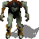
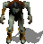

 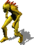
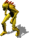


 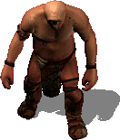
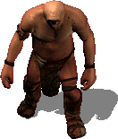


 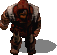
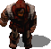


 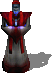
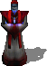


 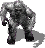
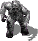


 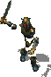
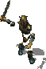
 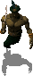
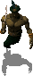
 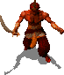
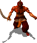


 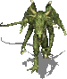
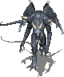
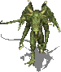
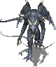

 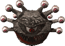
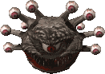


 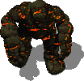
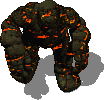


 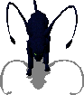
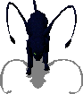


 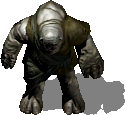
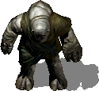


 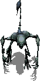
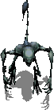


 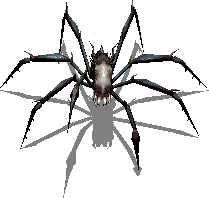
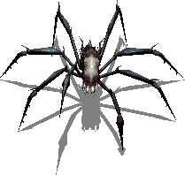